Gallery
Below are examples of apps built with Heron (in no particular order). If you have a Heron app running publicly or internally
you would help the project greatly if you send a screenshot, a URL (if possible) and some words on
the type of app and Heron features used.
Also, if you know of a publicly accessible Heron app let us know.
In all cases send email to: info@heron-mc.org for displaying your heron app.
-
Prototype Viewer for Dutch Kadaster
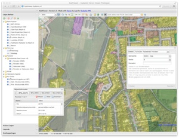
- Flagship Heron app
- url: http://kadviewer.kademo.nl
- organisation: Dutch Kadaster
- author: Just van den Broecke
- features: WFS search, Redlining, Catalog, basically all Heron features!
-
MDI-NI - Marine Infrastructure of Lower Saxony, Germany
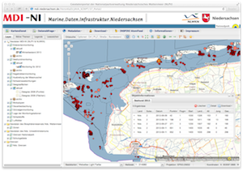
- Visualize and query datasets, metadata, INSPIRE AtomFeeds (external)
- url: http://www.mdi.niedersachsen.de/Portal
- organization: NLPV, NLWKN, MDI-DE
- author: Michael Räder
- features: WFS queries (GXP), downloads, address search, coordinate search, OL Editor, metadata, ...
One of the nicest and most complete Heron apps!
-
class GPlus(Czech Republic)
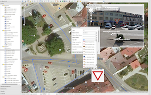
- base library of G-Obec (eng: G-Municipality) app for over 50 municipalities in CZ
- url: http://1drv.ms/1zagib7 (screenshots)
- organisation: GPlus (http://www.gplus.cz/)
- author: Martin Kokeš
- features: many, including: complex condition survey and mapping module for generic vector layers like traffic signs, urban accessories, power lines, water pipes etc. including Google Streetview helper for quick mapping
Click image to see more screenshots.
-
Warwickshire Historical and Current Maps (UK)
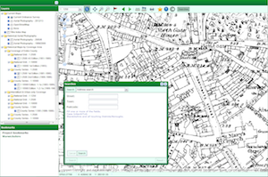
- A public viewer for current and historical maps and aerial photography for the county of Warwickshire, UK
- url: http://maps.warwickshire.gov.uk/historical
- organization: Warwickshire County Council
- author: Jonathan Moules
- features: search centre, printing, bookmarks
-
Warwickshire - Compass Advanced - internal (UK)
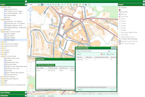
- Advanced, award winning web-GIS that offers users a selection of powerful tools and several hundred layers of GI data for the Warwickshire county to chose from. Used by about 80 staff members a day.
- url: internal
- organization: Warwickshire County Council
- author: Jonathan Moules
- features: printing, search, advanced queries, bookmarks, drawing tools, layer ordering, styling
Click image to see full image.
-
ÉMO Építésügyi Modul (Eng: Interactive Cadastral Management System) - Hungary
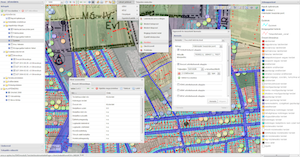
- Application name: ÉMO Építésügyi Modul ( ~ interactive cadastre managing system).
- Organization: Lechner Lajos Non Profitable Ltd.
- Author: Gergely Padányi-Gulyás
- Features: WFS queries, feature info, printing, measuring, OLEditor, layers, legend, downloading excel etc etc.
Click image to see full image.
-
Croatian Forests Ltd. Geoportal Viewer
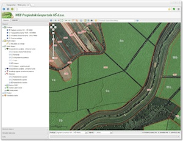
- Visualizes layers from Croatian Forests OGC services (PostGIS+GeoServer)
- url: (internal app)
- organisation: Croatian Forests Ltd.
- author: Croatian Forests Ltd. IT department
- features: WFS search (downloads in KML,DXF,SHP), coordinate search, OL editor, printing
Click image to see full image.
-
Air Quality Data Viewer (Geonovum/RIVM)
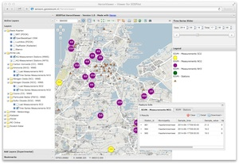
- Viewing chemical components with timeseries values
- url: http://sensors.geonovum.nl/heronviewer
- organisation: Geonovum
- author: Just van den Broecke
- features: WMS-Time, TimeRangeSlider, WFS search
-
Dutch Earthquakes
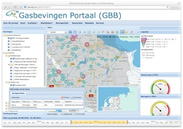
- Visualizes Earthquakes caused by gasmining
- url: http://opengis.eu/gasbevingen
- organisation: Gasbevingen.eu
- author: Wim Blanken
- features: TimeSlider
-
PDOK Viewer
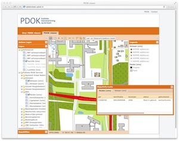
-
RVOB Viewer
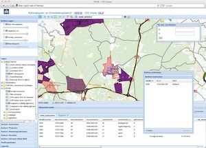
- Rijksvastgoed- en ontwikkelingsbedrijf (RVOB) Viewer
- organisation: http://www.rvob.nl
- author: RVOB
- features: WFS Searches
-
TransBASE San Francisco - transportation safety database
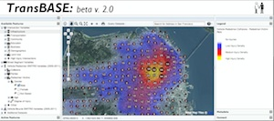
- Visualize and query datasets from SFDPH’s transportation safety database (TransBASE).
- url: http://www.transbasesf.org (password protected)
- organization: San Francisco Department of Public Health - Program on Health Equity and Sustainability (http://www.sfhealthequity.org/)
- author: Devan Morris
- features: WFS queries, downloads (SHP, CSV, JSON), address search, and printing
-
Kademo Lab Viewer
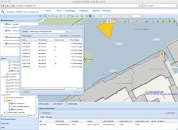
- Kademo Lab Viewer - testbed
- url: http://kademo.nl
- organisation: Dutch Kadaster
- author: Just van den Broecke for Kadaster
- features: WFS search, Redlining, basically most Heron features!
-
Eur-Eau-Pa WebGIS
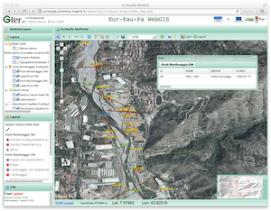
-
Deutsche Bahn
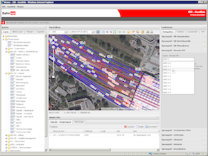
- Deutsche Bahn - DB Netz AG - ISD-Portal - Infrastructure railway geodata
- organization: DB Netz AG
- author: Dipl.-Ing. Wolfram Winter
- server content updated daily: about 100.000 track plans, about 4.300.000 track profiles files
- GeoServer with daily updated raster layer (about 62.000 files) and monthly updated vector layers (200 thematic layers)
- all fully automated processes from production to deployment
- features: advanced gui, advanced search modules, object information with download, thematic bookmarks, user bookmarks, layer ordering, styling, printing, redlining drawing tools, linked content
-
Directorate of Forestry, Hungary.
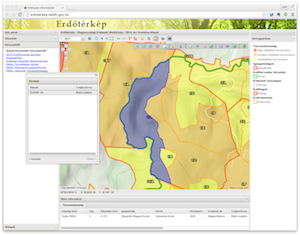
- Map of public Hungarian forestry information
- organization: National Food Chain Safety Office of Hungary, Forestry Directorate
- author: Zsolt Magyar
- back-end: GeoServer
- features: WFS-search, Redlining, bookmarks, KML download
-
WebGIS of the Vicenza municipality, Italy.
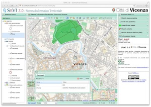
- WebGIS of the Vicenza municipality, Italy
- url: http://sit.comune.vicenza.it/SitVI/vicenza/index.php
- organization: Vicenza municipality
- author: Gter srl Innovazione in Geomatica, Gnss e Gis, contact: Roberto Marzocchi
- back-end: GeoServer/PostGIS
- features: WFS-search, custom search forms (Cadastral, Addresses)
-
"Wind, Ports, and Sea” project, Italy.
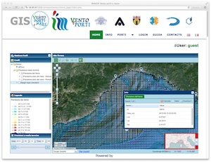
- Wind monitoring and climatology evaluations, Italy
- url: http://54.93.47.113/ventoportiemare/home_page/index.php
- organization: University of Genoa
- author: Gter srl Innovazione in Geomatica, Gnss e Gis, contact: Roberto Marzocchi
- back-end: MapServer/PostGIS
- features: Simple Time Slider
{kind=link}
{kind=link}
{kind=link}
{kind=link}
{kind=link}